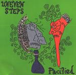

| Artist: | Uneven Steps |
| Title: | Pacified |
| Label: | Step And A Half Multimedia |
| Length(s): | 39 minutes |
| Year(s) of release: | 1996 |
| Month of review: | [07/2001] |
| 1) | Three | 2.49 |
| 2) | Sleep It Off | 4.24 |
| 3) | Lofty Elite | 3.26 |
| 4) | Cactus Eyes Don't Matter | 2.40 |
| 5) | Jest As Well | 3.49 |
| 6) | Feel, Don't Follow | 3.45 |
| 7) | Turn Your Motor Down | 4.32 |
| 8) | Spiced Litany | 2.32 |
| 9) | Damsel In Repress | 5.34 |
| 10) | After A Fashion | 3.37 |
| 11) | Repent | 1.26 |
Sleep It Off has a strong melody and sounds pointed notwithstanding the focus on acoustics. Lofty Elite sounds dreamy and is a bit boring. Cactus Eyes Don't Matter reminded me of the humourous side of Zappa and on Jest As Well the quirkiness continues.
Like Evan Symons solo, the music has a strong "do-it-yourself" feel with rather bare production. Inconspicuously we continue with Feel, Don't Follow. Turn Your Motor Down is invaded by riffs, but still has those wayward laid-back vocals. Spiced Litany is poppy.
Most interesting track with Sleep It Off is Damsel in Repress which has a good tenseness and notwithstanding the length keeps me attentive.
On After A Fashion the music gets punk intensity and the song is certainly not bad. The recording sounds a bit like "punk" as well, but the song is quite energetic. The vocal melody sounds familiar (from an earlier track).
The album ends fiddly with Repent.